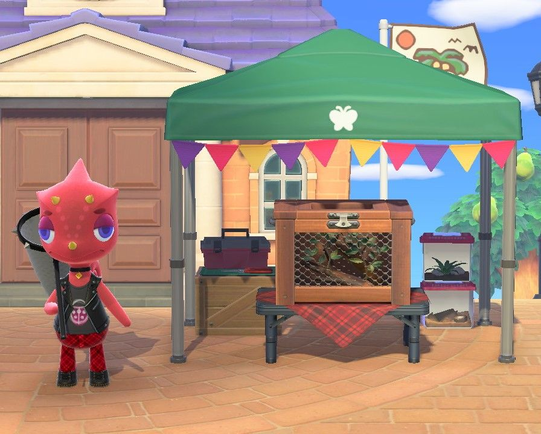
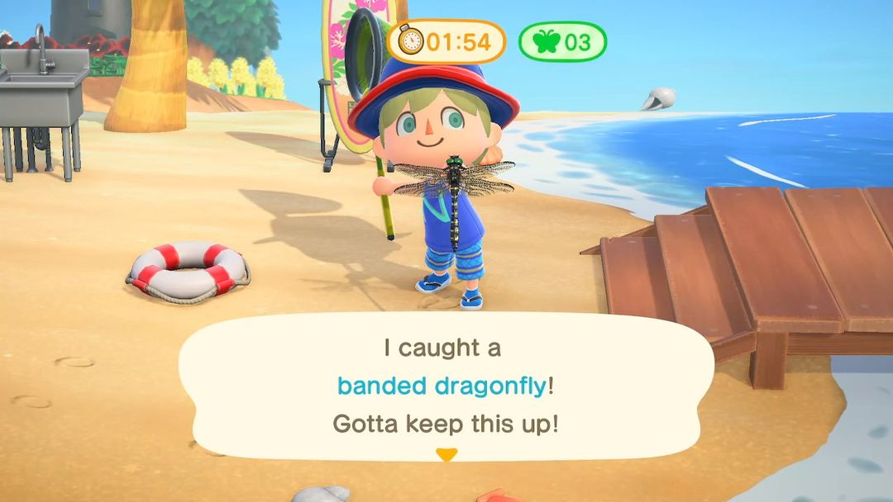
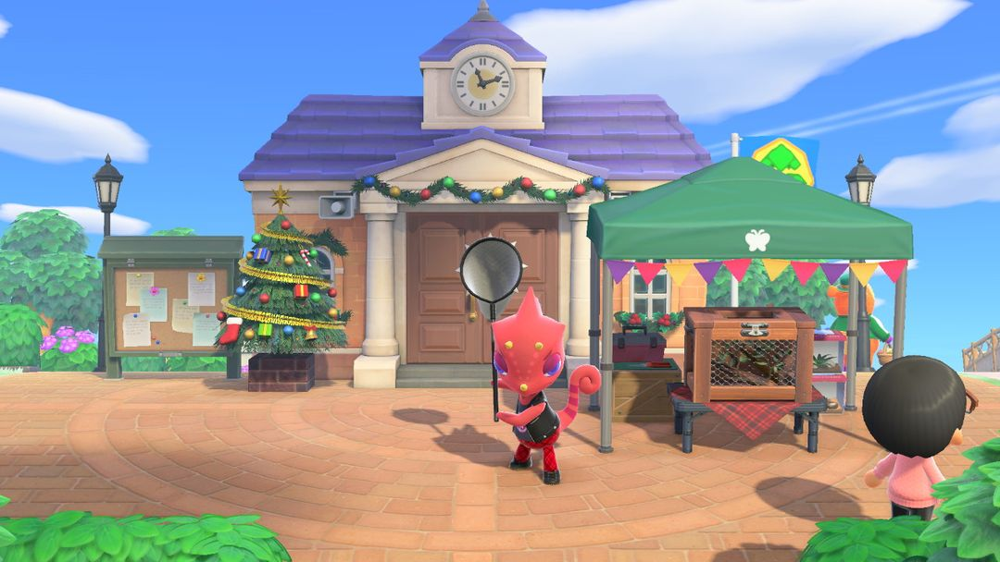

Bug-Off: dates for each hemisphere and how scoring works
Flick visits four times a year: June–September in the Northern Hemisphere, November–February in the Southern
The Bug-Off is hosted by Flick and held four times on your island every summer. The rules are simple: catch as many bugs as you can with your net in 3 minutes. Each bug is worth 1 point, regardless of rarity. Save up points to trade with Flick for bug-themed furniture and clothing, and once your lifetime total is high enough, he'll mail you trophies too.
Since summer comes at different times in each hemisphere, it's held June–September in the north and November–February in the south. On Bug-Off day, you can grind round after round as long as you have time, and if you can get friends from other islands to compete with you, your score climbs much faster. Below, we'll cover the dates first, then scoring and how to catch more bugs.
01When it happens
The Bug-Off is held during your local summer, so the months differ by hemisphere. The date is always a particular Saturday of the month:
| Hemisphere | Months | Day |
| Northern | June, July, August, September | Fourth Saturday of the month |
| Southern | November, December, January, February | Third Saturday of the month |
Once a season wraps up, there's a long wait until the next one: in the Northern Hemisphere, after the September Bug-Off you'll wait until next June; in the Southern Hemisphere, after February you'll wait until November. If you're after prizes or trophies, try not to miss any of the four each season. For the exact dates, check the Event Calendar in Nook Circle. About a week before each Bug-Off, a notice also goes up on the bulletin board next to Resident Services, and the notice for the last one of the season says so.
On Bug-Off day, Flick sets up a tent in the plaza in front of Resident Services. Sign-ups open at 9 AM and close at 6 PM. He sticks around until 8 PM, so after sign-ups close you can still sell him bugs and redeem prizes.

On Bug-Off day, Flick waits for you in the plaza in front of Resident Services (Image: Nookipedia)
02Signing up and scoring
Sign up with Flick to start a round. Your first round of the day is free; after that, each round costs 500 Bells. You can sign up as many times as you like before 6 PM, so as long as you have the Bells, you can keep going until sign-ups close.
Each round is 3 minutes. Bugs you catch go straight into the bug cage under the tent, so a full inventory doesn't matter. All you need is a net.
Scoring is 1 point per bug — a common butterfly is worth exactly as much as a Rajah Brooke's birdwing, and rare bugs don't earn extra. Catch 3 or more in a round and you get 2 bonus points. So rather than scouring the island for rare bugs, just catch everything you see.
After each round, you have to empty the bug cage before starting the next one. You can either sell the bugs to Flick, who pays 1.5 times the Nook's Cranny price, or take out the ones you want to keep.

During a round, the top of the screen shows the time left and how many bugs you've caught (Image: Nookipedia)
TipIf you catch a bug the museum doesn't have yet, take it out of the bug cage before selling, or it'll be sold along with the rest.
03Competing with friends
When visitors from other islands join in, Flick waives the entry fee. As soon as one person signs up, everyone's timer starts at once, with no warning beforehand — so it's best for everyone to have their net out and be in position before anyone signs up.
On top of individual scores, the group's catches for the round are added together, and if you hit certain totals, everyone gets a bonus:
| Group total | Bonus per person |
| 5–9 bugs | 5 points |
| 10–14 bugs | 7 points |
| 15 or more | 10 points |
With three or four people, hitting 15 bugs in a round is easy, and that's an extra 10 points each. Solo, catching 3 or more only gets you 2 extra points, so the difference adds up fast — and there's no entry fee either. If you can rope in some friends, do it.
Heads upThe next round can't start until everyone's bug cage is empty, so nudge each other after every round. If someone disconnects mid-round, that round's catches may not count.
04How to catch more
Three minutes isn't much, so how many you catch mostly comes down to prep. Here are some go-to strategies:
Plant and water flowers ahead of time. Butterflies love hovering around flowers. Plant flowers and water them a few days before the Bug-Off, and there'll be more butterflies around them on the day.
Check tree trunks. In summer, cicadas cling to tree trunks. They stay put and are easy to spot — just slow down as you get close.
Hold A to sneak. Holding A with your net out makes you tiptoe, so you're less likely to scare bugs off.
Plan your route. Walk around the island before the Bug-Off and note which flower patches and trees have bugs. Once the round starts, follow that path and catch as you go instead of doubling back.
Bring a spare net. Your net won't break mid-round, but its durability still goes down, so it might snap right as a round ends. A spare saves you a trip home.

Southern Hemisphere Bug-Offs run November–February, so the December one has the holiday tree up in the plaza (Image: Nookipedia)
05Prizes and trophies
Every 10 points can be traded to Flick for one prize. There are 13 prizes in total, given at random, and you won't get duplicates until you've received all 13 once. Unspent points carry over to the next Bug-Off.
The 13 prizes are: artisanal bug cage, bug cage, termite mound, spider doorplate, spider web, toy centipede, toy cockroach, bug aloha shirt, butterfly backpack, ladybug umbrella, butterflies wall, ladybug rug, and bug wand. The bug wand is a magic wand: give it a wave to change into an outfit saved in your wardrobe.
Trophies don't cost points. When your lifetime total reaches 100, 200, and 300 points, Flick will mail you the bronze bug trophy, silver bug trophy, and gold bug trophy. Points from earlier Bug-Offs count too, so every event moves you a little closer.
Left to right: bronze, silver, and gold bug trophies (Image: Nookipedia)
Nook Circle · Search "Nook Circle" on the App Store